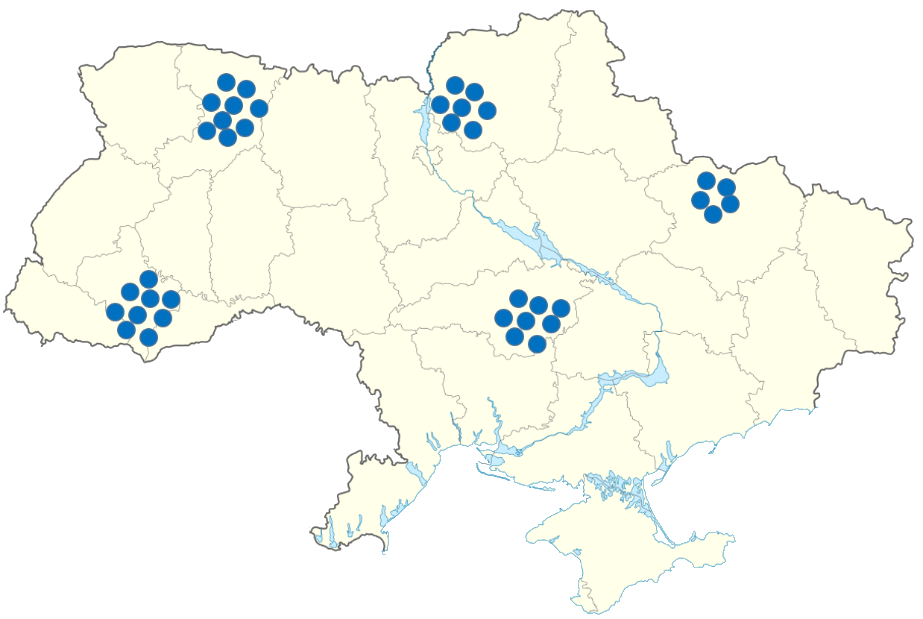

Consolidation

Consolidation is used when having PCVs together provides greater safety or enhances logistical support. During Consolidation Volunteers travel to a designated meeting point.
Situations, when Consolidation may be needed:
• Threat of terrorist attack at PCVs site
• There is a credible information of an invasion or large scale attack progresses in the conflict zone
• Protests become violent and are ongoing (but it is safe for Volunteers to move)
• Political instability such as a coup, post-election violence, or major transitions of power
• There is a direct threat to PCVs because of explosions, if they stay at their sites
• PCVs must move out of their sites due to radiation risk